<ion-header>
  <ion-toolbar mode="ios" color="dark">
    <!-- <ion-title text-center class="text-linear-gradient">Map</ion-title> -->
    <ion-buttons slot="secondary">
      <ion-menu-toggle>
        <ion-button color="light">
          <ion-icon name="menu" slot="icon-only"></ion-icon>
        </ion-button>
      </ion-menu-toggle>
    </ion-buttons>
    <ion-buttons slot="primary">
      <ion-button color="light" (click)="openLink()">
        <ion-icon slot="icon-only" name="subway"></ion-icon>
      </ion-button>
      <ion-button color="light" (click)="startBackgroundGeolocation()">
        <ion-icon slot="icon-only" name="play-circle"></ion-icon>
      </ion-button>
      <ion-button color="light" (click)="moreOptions()">
        <ion-icon slot="icon-only" name="more"></ion-icon>
      </ion-button>
    </ion-buttons>
  </ion-toolbar>
</ion-header>

<app-component-preload *ngIf="preload"></app-component-preload>


<ion-content *ngIf="!preload">

  <app-header-top></app-header-top>
  
  <div id="map"></div>

  <ion-fab vertical="center" horizontal="end" slot="fixed">
    <ion-fab-button color="light" (click)="nightMode()">
      <ion-icon class="custom-icon-night-mode"></ion-icon>
    </ion-fab-button>
  </ion-fab>

  <div class="content-more-options" *ngIf="presentMoreOptions" @container>
    <div class="content-more-options-header">
      <ion-text text-center>
        <h5>More options</h5>
      </ion-text>
      <ion-icon name="close-circle" color="light" (click)="moreOptions()"></ion-icon>
    </div>
    <div class="content-more-options-body" @options>
      <div class="content-more-options-item" (click)="itemMoreOptions('messages')">
         
        <p>Messages</p>
      </div>
      <div class="content-more-options-item" (click)="itemMoreOptions('stopLocation')">
         
        <p>Stop Location</p>
      </div>
      <div class="content-more-options-item" (click)="itemMoreOptions('addNote')">
         
        <p>Add Note</p>
      </div>
      <div class="content-more-options-item" (click)="itemMoreOptions('emergencyCall')">
         
        <p>Emergency Call</p>
      </div>
    </div>
  </div>
  <app-segment-options></app-segment-options>
</ion-content>